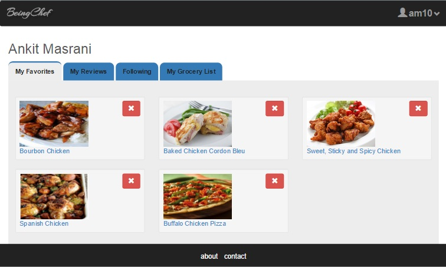

BeingChef User Dashboard-Favorites
The user dashboard page consists of the name of the user in the heading and a tab structure to
allow the user to navigate to various sections of his profile.
- Shown below is the favorites tab of the user.
- On this tab the user can view the dishes
marked as favorite. The page shows a grid view of the favorites of the user.
- A particular favorite dish can be removed by clicking on the red remove icon besides the dish
image.
